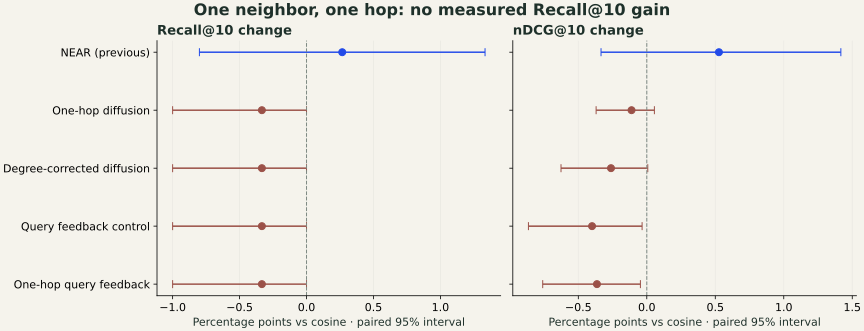

01 / The idea
Let documents
recommend one neighbor.
The encoder stays frozen. The extra knowledge is the structure of the indexed corpus.
For every normalized document vector xi, precompute its closest other document n(i). This creates a directed graph with one outgoing edge per document. Save that edge's cosine ci and each destination's incoming-edge count hj.
At query time, take the cosine top N and follow each stored link once. No newly discovered document becomes another seed. Several seeds can point to the same destination; those votes accumulate.
This is related to graph-based reranking and pseudo-relevance feedback. Our strict one-neighbor mixture is a small, inspectable experiment, not a claim to have invented either field.
An exact-search trap
Adding neighbors and sorting them by the same cosine cannot improve the top k when k ≤ N. The exact search already found those highest-scoring documents. To change the answer, we must change the scoring rule.
02 / Make it mathematical
Two sources of evidence.
One explicit assumption.
Let sj = q · xj. Convert the original scores to a softmax distribution p, using temperature T. This preserves cosine ordering. It is a scoring distribution, not calibrated relevance probability.
Within the original top N, give each seed a softmax weight ai. Its vote is stronger when the query matches it and its neighbor edge is strong. With γ = 1, divide by the destination's corpus-wide popularity; γ = 0 is ordinary diffusion.
gj = bj / ∑d bdEqual votes would otherwise favor destinations simply because many documents point to them. Degree correction removes that specific counting effect, not every bias.
Blend the two distributions. λ = 0 recovers the original ranking; larger λ gives neighbor evidence more influence. If no positive edge contributes, the implementation falls back to p.
For relevant R and competitor C, subtract their scores:
If R initially loses by Δp = pC − pR > 0, neighbor evidence can reverse that pair only if Δg = gR − gC > 0 and:
The unproved assumption is that similar documents tend to provide evidence for the same query. Algebra can tell us what follows if that assumption produces a useful vote distribution. It cannot make the assumption true.
What do the query-feedback variants change?
They build a feedback vector from the weighted seeds, then run a second full-corpus search. Ordinary feedback uses each seed directly. Graph feedback mixes each seed with its one neighbor:
v = ∑ ai[(1 − ηi)xi + ηixn(i)]
q′ = unit((1 − β)q + βv)
η = 0 is the ordinary feedback control; η = 0.5 is the graph variant. No additional encoder call is needed. The original query retains weight 1 − β. This is a second search, unlike the diffusion methods' bounded candidate union.
For a losing pair, reversal requires βv · (xR − xC) > (1 − β)q · (xC − xR). Normalizing q′ does not change ordering for that query.
When could averaging actually reduce noise?
Under an illustrative model xi = μi + εi, assume independent, zero-mean noise with E‖ε‖² = σ². Averaging a document with its neighbor estimates μi with mean squared error σ²/2 + ‖μn − μi‖²/4. It improves on σ² only when ‖μn − μi‖² < 2σ².
A similar semantic target and sufficiently independent errors can help. Different targets or correlated errors can remove the benefit. This unnormalized noise model is motivation; frozen neural embeddings and normalized cosine need not satisfy it.
03 / The experiment
Four variants.
No top-ten recall gain.
We reused the exact EG2 INT4 QAT text embeddings from the original experiment: 5,183 SciFact documents, 807 development queries, and 300 test queries. Only the scoring method changed.
| Method | Recall@10 | Δ | nDCG@10 | Recall@100 |
|---|---|---|---|---|
| Cosine baseline | 91.93 | — | 83.86 | 99.00 |
| NEAR · previous | 92.20 | +0.27 | 84.39 | 98.33 |
| One-hop diffusion | 91.60 | −0.33 | 83.75 | 99.00 |
| Degree-corrected diffusion | 91.60 | −0.33 | 83.60 | 99.00 |
| Ordinary query feedback | 91.60 | −0.33 | 83.46 | 99.00 |
| One-hop query feedback | 91.60 | −0.33 | 83.50 | 99.00 |

Each new positive-weight method worsens Recall@10 for one query, improves none, and leaves 299 unchanged. The 95% interval for its mean recall change is [−1.00, 0.00] points. With only one nonzero change, this does not establish a reliable general loss either. The four-method correction also does not support a gain.
What selection actually chose
We searched 120 configurations by development Recall@10, then nDCG@10. Cosine already has 100% development Recall@10, with nDCG@10 of 98.6706. Every best positive-weight variant ties recall and slightly lowers nDCG. Including zero modification therefore selects the baseline. The positive variants above are diagnostic comparisons.
The locked diffusion settings use λ = 0.01, T = 0.025, and N = 50 (ordinary) or 100 (degree-corrected). Both feedback methods use β = 0.05, T = 0.05, and 30 seeds. Original NEAR was tuned for nDCG@10; the new experiment is recall-first.
This is an exploratory follow-up on the same previously inspected test set. New weights were locked on development before the new test evaluation, but this is not independent confirmation. A different dataset or untouched queries are needed to test generalization.
04 / A fair budget
More candidates
are not a better top ten.
The top ten plus one neighbor each contains an average of 15.32 unique documents. Its unranked coverage rises from 91.93% to 92.93%. That looks promising until we compare the same retrieval budget.
| Initial N | Mean union size | Initial recall | Union recall | Same-count cosine |
|---|---|---|---|---|
| 10 | 15.32 | 91.93 | 92.93 | 94.67 |
| 50 | 74.56 | 97.33 | 97.67 | 98.00 |
| 100 | 146.29 | 99.00 | 99.00 | 99.00 |
At N = 10, neighbor expansion finds new judged evidence for only three queries: 303, 913, and 914. Simply retrieving 20 cosine results covers 95.00%. At N = 100, the one-hop expansion finds no additional judged relevant document.
The candidate ceiling matters. Even a perfect reranker restricted to the N = 10 union cannot exceed 92.93 Recall@10 on these judgments. A real reranker must also avoid ejecting relevant documents already in the top ten.
05 / Working examples
Follow the connection.
Then follow the score.
DMRT1 is a sex-determining gene that is epigenetically regulated by the MHM region.
The connection helps.
Recall@10 stays 0.
There are also smaller successful rank changes: query 1226's TET-protein evidence receives four seed votes and moves 5 → 4, improving nDCG@10 by 4.38 points. Recall@10 was already 1.
When the wrong document gets the votes
Query: “NOX2-independent pathways can generate peroxynitrite by reacting with nitrogen intermediates.” Compare the judged document with a competitor that receives votes from seeds at ranks 2 and 7.
| Document | Direct p | Neighbor g | Mixed score |
|---|---|---|---|
| Altered recognition of antigen…Judged relevant · corpus indegree 0 | 0.010020 | 0.000000 | 0.009920 |
| Hydrogen sulfide interacts with nitric oxide…Competitor · two supporting seeds | 0.009526 | 0.092758 | 0.010358 |
At λ = 0.010, the competitor leads by 0.000439.
This slider changes only the displayed pair. It does not rerun the corpus or select a new weight. In the measured full ranking at λ = 0.01, the relevant document falls 9 → 11 and Recall@10 falls 1 → 0. A second competitor also overtakes it. The new score is a probability mixture, so its units differ from cosine.
The earlier NEAR success, query 785, is another contrast: NEAR moved its evidence 12 → 9; ordinary diffusion moves it 12 → 13. None of the 50 seeds points to that document.
These examples were chosen after evaluation to explain mechanisms. They did not set the parameters. Inspect the saved traces ↗
06 / What failed, mathematically?
Topical closeness
is not evidence relevance.
277 of the 300 test queries have exactly one judged relevant document. Because the graph excludes self-links, that document's outgoing edge necessarily points to an unjudged document for those queries. Another seed could point back to the correct document, but that is not guaranteed.
Across the selected top-50 seeds, just 45 of 331 edges from judged relevant seeds point to another judged relevant document. The graph's median edge cosine is 0.909. High document similarity did not reliably preserve evidence relevance here. Unjudged documents may still be topically or semantically useful; this benchmark measures the supplied evidence judgments.
This explains the structural problem with query 834. Its relevant document has zero incoming edges in the entire corpus. Increasing the seed count cannot create a missing inbound link.
There is a precise recall condition, too. Let Aold and Anew be the two top-k sets, and R the judged relevant set:
No unlabeled weighting rule can universally guarantee better relevance: the same vector geometry can be paired with different relevance labels. A changed ranking may improve one labeling and worsen another. What can be proved are conditional statements about the geometry and weights; the connection to relevance must be tested.
The conclusion we can support
These locked one-hop variants do not improve recall on this EG2/SciFact experiment. The idea can discover missed evidence and improve individual ranks. That is insufficient to establish a better retriever. A development set with recall errors and a neighbor signal that preserves query-specific relevance remain important open requirements.
07 / Keep it inspectable
Frozen vectors.
Open evidence.
The repository includes the one-hop implementation, 120-candidate development grid, locked selection, all six top-100 runs, per-query metrics, graph edges, candidate-budget audit, and mechanism traces. Original NEAR source files and measured results are preserved.
python -m unittest discover -s tests -v
python -m neighbor_retrieval.benchmark --phase select \
--out results/rerun_one_hop --graph artifacts/rerun_one_hop/graph.npz
python -m neighbor_retrieval.benchmark --phase evaluate \
--out results/rerun_one_hop --graph artifacts/rerun_one_hop/graph.npzFor a fresh clone, first create matching embeddings and a baseline/NEAR run using the root reproduction guide. Pass their paths with --embeddings, --prior, and --data to both phases. Models, raw corpus, embedding cache, and native index are not bundled. See the full report for runtime and input requirements.
- Full mathematical report and reproduction notesDefinitions, derivations, conditions, assumptions, uncertainty, and limitations.
- Complete experiment recordDevelopment-only selection, new test metrics, graph edges, and example traces.
- Implementation · Tests · Page dataThe graph is built from corpus embeddings alone. The encoder is never trained.
- Reciprocal nearest neighbors for dense retrieval · Graph query expansionRelated research; different methods and settings, not results reproduced here.
- Research note 01: NEAR, under the microscopeThe original EG2 experiment and the discussion of residual similarity guarantees.
A graph can find a connection.
Relevance decides whether it was useful.